|
AXO X1
|
|
AXO X1
|
SPI FRAM class implemented according to C++ singleton design pattern. More...
#include <fram.h>
SPI FRAM class implemented according to C++ singleton design pattern.
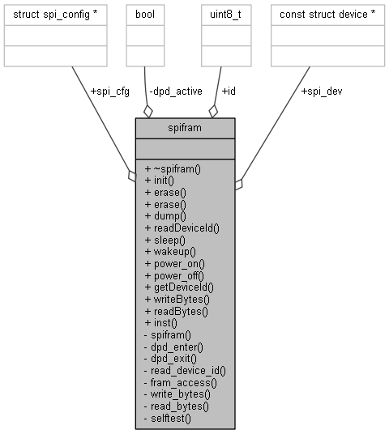
Public Member Functions | |
| ~spifram () | |
| SPI FRAM class destructor. More... | |
| void | init () |
| The initialization function of the SPI FRAM class. More... | |
| void | erase () |
| Function to erase the content of the FRAM. More... | |
| void | erase (void *from, int32_t len) |
| void | dump (uint32_t from, int32_t len) |
| Function to print the content of the FRAM in a terminal. More... | |
| int | readDeviceId () |
| Function to read the device ID if the FRAM chip. More... | |
| int | sleep () |
| Function to enter deep power down mode of FRAM. More... | |
| int | wakeup () |
| Function to wake up FRAM from deep power down mode. More... | |
| int | power_on () |
| Function to switch on FRAM. More... | |
| int | power_off () |
| Function to switch off FRAM. More... | |
| uint8_t * | getDeviceId () |
| Getter function to retrieve the device ID. More... | |
| int | writeBytes (uint32_t addr, uint8_t *data, uint32_t num_bytes) |
| Function to write multiple bytes into FRAM. More... | |
| int | readBytes (uint32_t addr, uint8_t *data, uint32_t num_bytes) |
| Function to read multiple bytes from FRAM. More... | |
Static Public Member Functions | |
| static spifram * | inst () |
| The inst function to retrieve the exclusiv only instance of the class. More... | |
Data Fields | |
| uint8_t | id [4] |
| const struct device * | spi_dev |
| SPI controller device. More... | |
| struct spi_config * | spi_cfg |
| SPI controller configuration. More... | |
Private Member Functions | |
| spifram () | |
| SPI FRAM class constructor. More... | |
| int | dpd_enter (const struct device *spi, struct spi_config *spi_cfg) |
| Function to enter deep power down mode of FRAM. More... | |
| int | dpd_exit (const struct device *spi, struct spi_config *spi_cfg) |
| Function to wake up FRAM from deep power down mode. More... | |
| int | read_device_id (const struct device *spi, struct spi_config *spi_cfg) |
| Function to read the device ID from FRAM. More... | |
| int | fram_access (const struct device *spi, struct spi_config *spi_cfg, uint8_t cmd, uint32_t addr, void *data, size_t len) |
| Function to access FRAM for reading and writing. More... | |
| int | write_bytes (const struct device *spi, struct spi_config *spi_cfg, uint32_t addr, uint8_t *data, uint32_t num_bytes) |
| Function to write multiple bytes to FRAM. More... | |
| int | read_bytes (const struct device *spi, struct spi_config *spi_cfg, uint32_t addr, uint8_t *data, uint32_t num_bytes) |
| Function to read multiple bytes to FRAM. More... | |
| bool | selftest () |
Private Attributes | |
| bool | dpd_active |
| ~spifram | ( | ) |
|
private |
|
static |
The inst function to retrieve the exclusiv only instance of the class.
In case there is no instance created, the constructor will be called to create the instance. Finally a pointer to the instance is returned.
Definition at line 66 of file fram.cpp.
Referenced by init().
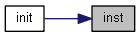
| void init | ( | ) |
The initialization function of the SPI FRAM class.
The function initialize the private member variables spi_dev (SPI controller device) and spi_cfg (SPI controller configuration) by calling the functions getController and getConfig of the spibus instance spibus::inst(), Afterwards self test of the class will be performed by calling function selftest. In case of a failure an error message will be printed.
In Zephyr devicetree FRAM SPI is SPI bus 3.
Definition at line 82 of file fram.cpp.
References spibus::getConfig(), spibus::getController(), spibus::init(), spibus::inst(), inst(), selftest(), spi_cfg, and spi_dev.
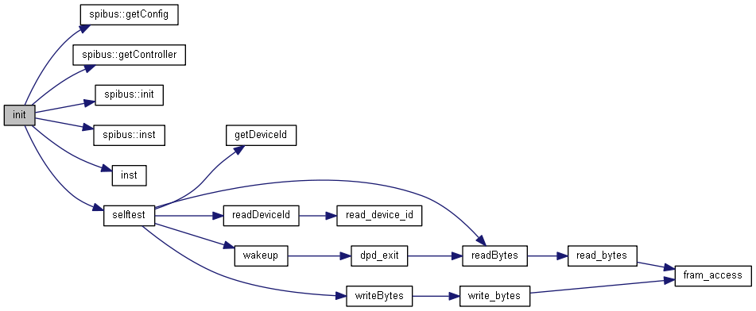
| void erase | ( | ) |
Function to erase the content of the FRAM.
Function initialize an array of size 1 KByte with 0 and write every this array into FRAM by calling function writeBytes 512 times.
Definition at line 120 of file fram.cpp.
References writeBytes().
| void erase | ( | void * | from, |
| int32_t | len | ||
| ) |
| void dump | ( | uint32_t | from, |
| int32_t | len | ||
| ) |
Function to print the content of the FRAM in a terminal.
| from | Start point of data to be printed |
| len | Length (number of bytes) of data to be printed |
Function read every single byte from start point until end point (from + len) by calling function readBytes. After every call a short delay of 5 ms will be performed and the data will be printed out by call of macro LOG_PRINTK.
Definition at line 138 of file fram.cpp.
References readBytes().
| int readDeviceId | ( | ) |
Function to read the device ID if the FRAM chip.
The public method read device ID by calling the private member function read_device_id In case of a failure an error message will be printed.
Definition at line 104 of file fram.cpp.
References read_device_id(), spi_cfg, and spi_dev.
Referenced by selftest().
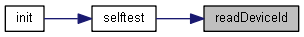
| int sleep | ( | ) |
Function to enter deep power down mode of FRAM.
Function enters deep power down mode by calling private method dpd_enter.
Definition at line 169 of file fram.cpp.
References dpd_enter(), spi_cfg, and spi_dev.
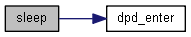
| int wakeup | ( | ) |
Function to wake up FRAM from deep power down mode.
Function returns from deep power down mode by calling private method dpd_exit.
Definition at line 180 of file fram.cpp.
References dpd_exit(), spi_cfg, and spi_dev.
Referenced by selftest().
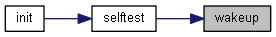
| int power_on | ( | ) |
| int power_off | ( | ) |
| uint8_t * getDeviceId | ( | ) |
Getter function to retrieve the device ID.
Function returns a pointer to public array id[4].
Definition at line 156 of file fram.cpp.
References id.
Referenced by selftest().
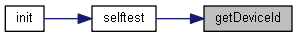
| int writeBytes | ( | uint32_t | addr, |
| uint8_t * | data, | ||
| uint32_t | num_bytes | ||
| ) |
Function to write multiple bytes into FRAM.
| addr | Startaddress for writing the data in FRAM |
| data | Pointer to array with the data to be written |
| num_bytes | Number of bytes to be written |
Function writes num_bytes from array data into FRAM starting at address addr by calling private method write_bytes.
Definition at line 214 of file fram.cpp.
References spi_cfg, spi_dev, and write_bytes().
Referenced by erase(), and selftest().
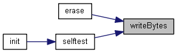
| int readBytes | ( | uint32_t | addr, |
| uint8_t * | data, | ||
| uint32_t | num_bytes | ||
| ) |
Function to read multiple bytes from FRAM.
| addr | Startaddress for reading the data from FRAM |
| data | Pointer to array for the data to be read |
| num_bytes | Number of bytes to be read |
Function read num_bytes into array data from FRAM starting at address addr by calling private method read_bytes.
Definition at line 234 of file fram.cpp.
References read_bytes(), spi_cfg, and spi_dev.
Referenced by dpd_exit(), dump(), and selftest().
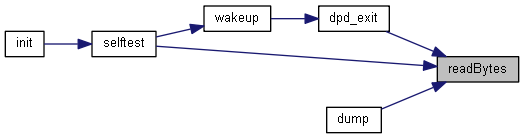
|
private |
Function to enter deep power down mode of FRAM.
| spi | Pointer to the SPI device node identifier of type struct device |
| spi_cfg | Pointer to the SPI controller configuration structure of type struct spi_config |
Function initializes transmit buffer, set the enter deep power down OP code command MB85SR4MTY_DPD_CMD and pass transmit buffer to FRAM by calling function spi_write. In case of success the private member variable dpd_active is set to true and the function returns 0 for success indication. In case of an error function returns error code EIO. See MB85RS4MTY data sheet, page 7.
Definition at line 459 of file fram.cpp.
References dpd_active, MB85SR4MTY_DPD_CMD, and spi_cfg.
Referenced by sleep().
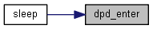
|
private |
Function to wake up FRAM from deep power down mode.
| spi | Pointer to the SPI device node identifier of type struct device |
| spi_cfg | Pointer to the SPI controller configuration structure of type struct spi_config |
Function wakes up FRAM by pulling Chip Select CS to low and after a delay of 10 usec to high. In case of an error function returns error code EIO.Afterwards a dummy read of one byte is performed at address 0 og FRAM by calling function readBytes. Finally the private member variable dpd_active is set to false and function returns 0 for success indication. See MB85RS4MTY data sheet, page 22.
Definition at line 496 of file fram.cpp.
References dpd_active, readBytes(), and spi_cfg.
Referenced by wakeup().
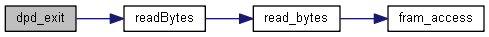
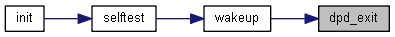
|
private |
Function to read the device ID from FRAM.
| spi | Pointer to the SPI device node identifier of type struct device |
| spi_cfg | Pointer to the SPI controller configuration structure of type struct spi_config |
Function initializes transmit and receive buffer, set the read Device ID OP code command MB85RS4MTY_MANUFACTURER_ID_CMD and read the device ID by calling function spi_transceive. See MB85RS4MTY data sheet, page 7 for OP code commands and page 11 for device ID.
Definition at line 314 of file fram.cpp.
References id, MB85RS4MTY_MANUFACTURER_ID_CMD, and spi_cfg.
Referenced by readDeviceId().
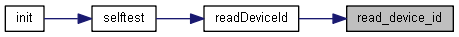
|
private |
Function to access FRAM for reading and writing.
| spi | Pointer to the SPI device node identifier of type struct device |
| spi_cfg | Pointer to the SPI controller configuration structure of type struct spi_config |
| cmd | OP code command |
| addr | Startaddress for reading or writing the data from / in FRAM |
| data | Pointer to array for the data to be read or to be written |
| len | Number of bytes to be read or to be written |
Function initializes transmit buffer an set the OP code command cmd and start address in array access. In case of reading the receive buffer is initialized and read the data by calling function spi_transceive. In case of writing the data will be written by calling function spi_write. Finally the return value of function spi_transceive or spi_write will be returned to calling function. See MB85RS4MTY data sheet, page 7.
Definition at line 353 of file fram.cpp.
References MB85RS4MTY_READ_CMD, and spi_cfg.
Referenced by read_bytes(), and write_bytes().
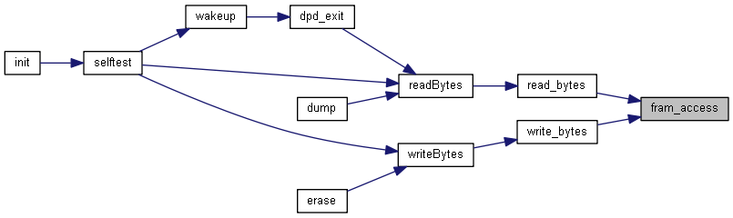
|
private |
Function to write multiple bytes to FRAM.
| spi | Pointer to the SPI device node identifier of type struct device |
| spi_cfg | Pointer to the SPI controller configuration structure of type struct spi_config |
| addr | Startaddress for writing the data in FRAM |
| data | Pointer to array for the data to be written |
| num_bytes | Number of bytes to be written |
Function enable writing by calling function fram_access with OP code command MB85RS4MTY_WRITE_ENABLE_CMD. In case of an error function returns immediately with error code EIO, otherwise the data will be written by calling function fram_access with OP code command MB85RS4MTY_WRITE_CMD. In case of an error function returns error code EIO, otherwise returns 0 for indication success. See MB85RS4MTY data sheet, page 7.
Definition at line 396 of file fram.cpp.
References fram_access(), MB85RS4MTY_WRITE_CMD, MB85RS4MTY_WRITE_ENABLE_CMD, and spi_cfg.
Referenced by writeBytes().
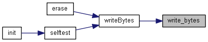
|
private |
Function to read multiple bytes to FRAM.
| spi | Pointer to the SPI device node identifier of type struct device |
| spi_cfg | Pointer to the SPI controller configuration structure of type struct spi_config |
| addr | Startaddress for reading the data from FRAM |
| data | Pointer to array for the data to be read |
| num_bytes | Number of bytes to be read |
Function read the data calling function fram_access with OP code command MB85RS4MTY_READ_CMD. In case of an error function returns error code EIO, otherwise returns 0 for success indication. See MB85RS4MTY data sheet, page 7.
Definition at line 433 of file fram.cpp.
References fram_access(), MB85RS4MTY_READ_CMD, and spi_cfg.
Referenced by readBytes().
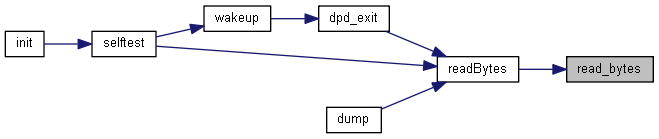
|
private |
Definition at line 519 of file fram.cpp.
References FRAM_DEVICE_ID_1, FRAM_DEVICE_ID_2, FRAM_DEVICE_ID_3, FRAM_DEVICE_ID_4, getDeviceId(), readBytes(), readDeviceId(), wakeup(), and writeBytes().
Referenced by init().
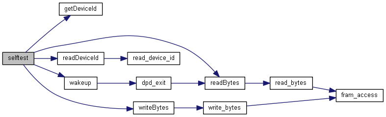
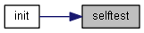
| uint8_t id[4] |
Definition at line 89 of file fram.h.
Referenced by getDeviceId(), and read_device_id().
| const struct device* spi_dev |
SPI controller device.
Definition at line 90 of file fram.h.
Referenced by init(), readBytes(), readDeviceId(), sleep(), wakeup(), and writeBytes().
| struct spi_config* spi_cfg |
SPI controller configuration.
Definition at line 91 of file fram.h.
Referenced by dpd_enter(), dpd_exit(), fram_access(), init(), read_bytes(), read_device_id(), readBytes(), readDeviceId(), sleep(), wakeup(), write_bytes(), and writeBytes().
|
private |
Definition at line 113 of file fram.h.
Referenced by dpd_enter(), and dpd_exit().